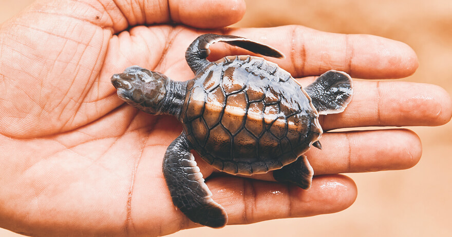

The Kosgoda Turtle Hatchery is a popular tourist attraction located in Kosgoda, Sri Lanka. It is a conservation project that aims to protect sea turtles and their eggs from various threats and to promote their conservation.
Visitors to the Kosgoda Turtle Hatchery can learn about the different species of sea turtles found in Sri Lanka, their life cycle, and the challenges they face. The hatchery often conducts educational programs and awareness campaigns to promote conservation efforts and raise awareness about the importance of protecting these endangered creatures.
The hatchery is involved in several activities related to sea turtle conservation, including collecting and protecting sea turtle eggs, hatching them in a controlled environment, and releasing the baby turtles back into the ocean. The hatchery also provides a safe haven for injured and disabled turtles, nursing them back to health before releasing them.